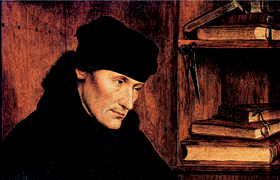

Lezione 12  Riforma e controriforma
Riforma e controriforma

Ecco come Erasmo da Rotterdam, nella sua opera principale, Elogio della pazzia, condanna le superstizioni e l’uso che ne viene fatto, chiamando in causa la responsabilità della gerarchia nel suo massimo livello:
«I papi diconsi vicari di Cristo; ma se attendessero a conformarsi alla vita di Dio loro maestro, se praticassero la sua povertà e la sua dottrina, se soffrissero pazientemente i suoi patimenti e la sua croce e mostrassero il suo disprezzo del mondo, se riflettessero seriamente al bel nome di Papa, cioè di padre e all’epiteto di Santissimo con cui vengono onorati: chi sarebbe mai più infelice di loro?»
Si schiera contro coloro che si opponevano alla lettura della Bibbia in volgare da parte degli ignoranti. La Bibbia – sostiene - non è stata dettata per pochi teologi e dichiara:
«Vorrei che tutte le donnicciole potessero leggere il Vangelo e le lettere di san Paolo».
Critica duramente l’ignoranza e la falsità di quei religiosi che vivono nel lusso predicando povertà e frugalità:
«Religiosi e monaci si sono messi in testa che il massimo della religione sia non aver nulla a che fare con gli studi, tanto da non saper neppure leggere. Poi, quando in chiesa ragliano, da asini che sono, le loro preghiere, ma senza capirle, credono di aver fatto il loro dovere. Se osserverai molti uomini di chiesa ne vedrai alcuni così rigidi osservanti della religione, che di sopra portano il rozzo saio, di dentro una camicia finissima; altri invece di fuori son vestiti di tela e di dentro di lana; altri ancora hanno in orrore il denaro come veleno, ma non per questo si astengono dal vino e dal lusso più sfrenato. Insomma, tutto il loro sforzo, che è straordinario, è rivolto a distinguersi nel tenor di vita; non s’adoperano a essere simili a Cristo, ma a esser dissimili».